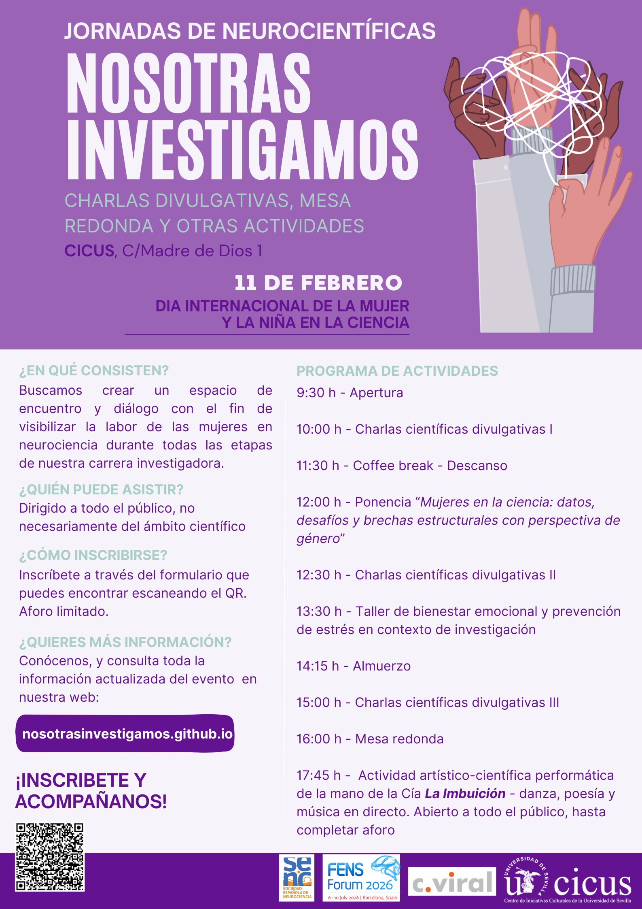

Programa
Las jornadas combinan charlas divulgativas en neurociencia, una ponencia con perspectiva de género, un taller de salud mental en investigación y entorno universitario, una mesa redonda y una actividad artístico-científica orientada a potenciar la reflexión, la divulgación y el diálogo entre ciencia y sociedad.
Miércoles 11 de febrero de 2026 · CICUS
9:30 – 10:00: Inscripciones y acto de inauguración
10:00 – 11:30: Charlas científicas divulgativas I
Investigadoras de distintos grupos y en diferentes etapas de su carrera nos hablarán de su investigación actual y/o de temas relacionados con la neurociencia.
10:00 – 10:20: Explorando nuestro cerebro: ¿qué sabemos sobre los tumores cerebrales?
Dra. Diana Aguilar Morante · Dpto. de Fisiología Médica y Biofísica, Universidad de Sevilla
10:20 – 10:40: Cuando la energía de las neuronas falla: entendiendo el Párkinson
Dra. Claudia García Rodríguez · Dpto. de Fisiología Médica y Biofísica, Universidad de Sevilla
10:40 – 11:00: Terminaciones en empalizada en los músculos extraoculares: ¿proprioceptores o algo más?
Dra. Genova Carrero Rojas · Dpto. de Fisiología, Universidad de Sevilla
11:00 – 11:20: Microfenotipos y marcadores tempranos en neurodesarrollo: trayectorias e impacto en autismo y esquizofrenia
Dra. Nathalia Garrido Torres · Hospital Universitario Virgen del Rocío de Sevilla
11:30 – 12:00: Descanso · Coffee break
12:00 – 12:30: Ponencia: Mujeres en la ciencia: datos, desafíos y brechas estructurales con perspectiva de género
Dra. Elisa Fernández Núñez · Consejera Técnica del Ministerio de Sanidad
12:30 – 13:30: Charlas científicas divulgativas II
12:30 – 12:50: De la curiosidad a la evidencia: mi viaje en neurociencia del envejecimiento y enfermedad de Parkinson
Dra. Patricia Díaz Galván · Instituto de Biomedicina de Sevilla (IBIS)
12:50 – 13:10: El papel de los fitoquímicos en el envejecimiento
Dra. Sara Morcuende Fernández · Dpto. de Fisiología, Universidad de Sevilla
13:10 – 13:30: El reto de no olvidar
Dra. Alicia Elena Rosales Nieves · Dpto. de Bioquímica y Biología Molecular, Universidad de Sevilla
13:30 – 14:15: Taller: Bienestar emocional y prevención del estrés en contexto de investigación
Dra. María del Mar Benítez Hernández · Unidad de Psicología Aplicada, Universidad de Sevilla
14:15 – 15:00: Comida y networking
15:00 – 16:00: Charlas científicas divulgativas III
15:00 – 15:20: Del músculo al cerebro: señales neurofisiológicas que conectan el ayuno intermitente con el bienestar
Dra. Raquel Cano García · Centro Universitario San Isidoro
15:20 – 15:40: Memoria en movimiento: el Alzheimer no sólo empieza en las neuronas
Silvia Quiñones Cañete · Instituto de Biomedicina de Sevilla/CSIC
15:40 – 16:00: La neurociencia de la audición: volver a oír con implante coclear
Dra. Amparo Callejón Leblic · Hospital Universitario Virgen Macarena de Sevilla
16:00 – 17:00: Mesa redonda
Participan: Dra. Mari Luz Montesinos (Dpto. Fisiología Médica y Biofísica, US), Dra. Rocío Leal Campanario (Dpto. Fisiología, Anatomía y Biología Celular, UPO), Dra. Diana Aguilar Morante (Dpto. de Fisiología Médica y Biofísica, US) y Silvia Quiñones Cañete (Instituto de Biomedicina de Sevilla/CSIC)
17:45 – 18:30: Actividad artístico-científica performática
Compañía
La Imbuición
· Participan : Alejandra Ruiz de Alda, Raquel Lao, Calebe Simões, y María Luz Montesinos.
Este espectáculo integrará poesía, música en directo y danza para fomentar una reflexión creativa en torno a la neurociencia.
No es necesaria inscripción previa, estará abierto a todo el público hasta completar el aforo. Para más información sobre este proyecto, se puede consultar esta web:
https://www.laimbuicion.com/proyectos/nos-imbuyes-tu/ .
18:30: Clausura oficial del acto